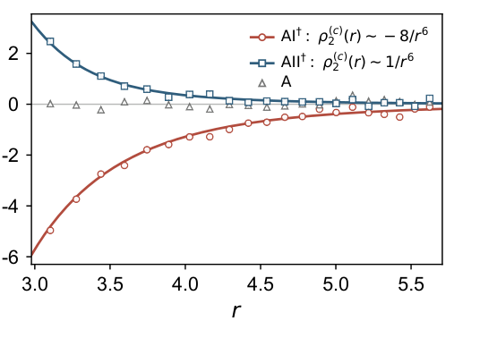

FIGURE 2 · SPECTRAL CORRELATION
Exact joint eigenvalue densities of non-Hermitian random matrices are Calogero scattering states
非厄米随机矩阵的精确联合本征值密度是 Calogero 散射态
Xiao、Chen、Liu、Ryu，arXiv:2609.00164v1，Fig. 2（CC BY 4.0）：三百万个 \(N=128\) 矩阵/类的有限距离相关；红负蓝正。\(r\)⁻⁶ 尾幅来自 WKB/RPA 近似，而非该图证明。